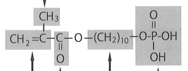

接着性モノマーは酸性モノマー、機能性モノマーとも呼ばれる。
| モノマー | 正式名称 | 特徴 |
|---|---|---|
| MDP | 10-メタクリロイルオキシデシルジハイドロゲンホスフェート | 歯質・ジルコニア両方に有効 |
| Phenyl-P | 2-メタクリロイルオキシエチルフェニルハイドロゲンホスフェート | 歯質への接着 |
| モノマー | 正式名称 | 特徴 |
|---|---|---|
| 4-META | 4-メタクリロイルオキシエチルトリメリット酸無水物 | 歯質への接着 |
| 4-MET | 4-メタクリロイルオキシエチルトリメリット酸 | 4-METAの加水分解物 |
| 4-AET | 4-アクリロイルオキシエチルトリメリット酸 | 象牙質接着に有効 |
| MAC-10 | 11-メタクリロイルオキシ-1,1-ウンデカンジカルボン酸 | 歯質への接着 |
歯質接着性モノマーに共通する構造：
両親媒性構造により、歯質とレジンの両方に結合できる。
歯質の無機成分に接着するのはどれか。2つ選べ。
【解説】無機成分（HAp）に接着するのは接着性モノマー。MDPはリン酸エステル系、4-METAはカルボン酸系の接着性モノマー。MMAはベースモノマー、HEMAは中性モノマー、Bis-GMAはベースモノマーで、いずれも接着性モノマーではない。
接着性モノマーの構造式を示す。歯質との接着部位はどれか。1つ選べ。

【解説】図はMDPの構造式。ア（二重結合）・イ（メチル基）・ウ（カルボニル基）は重合に関与する部分、エは長鎖アルキル基。オのリン酸基が歯質のHApと化学結合する接着部位である。
カルボン酸系接着性モノマーはどれか。2つ選べ。
【解説】カルボン酸系は4-METとMAC-10。MDPとPhenyl-Pはリン酸エステル系。HEMAは中性モノマーで接着性モノマーではない。
歯質接着性モノマーに共通するのはどれか。2つ選べ。
【解説】歯質接着性モノマーの共通構造は親水性基＋二重結合。Sを含むのはイオウ系メタルプライマー、Siを含むのはシランカップリング剤。-COOH基はカルボン酸系のみで、リン酸系は-PO₄H₂をもつ。
歯質接着性モノマーはどれか。2つ選べ。
【解説】MDPはリン酸エステル系、MAC-10はカルボン酸系の接着性モノマー。UDMAとBis-GMAはベースモノマー、DMAEMAは重合促進剤（第3級アミン）。
象牙質との接着に有効なのはどれか。2つ選べ。
【解説】HEMAはコラーゲン膨潤により象牙質接着を補助。4-AETはカルボン酸系接着性モノマーで象牙質のHApに結合。γ-MPTSはシランカップリング剤でセラミックス用。
HEMAの分子末端にあるのはどれか。1つ選べ。
【解説】HEMA（2-ヒドロキシエチルメタクリレート）は分子末端に水酸基（-OH）をもつ。この水酸基により親水性を示し、コラーゲン線維の膨潤を促す。
| 材料 | 接着対象 | 接着性モノマー |
|---|---|---|
| 歯質（HAp） | エナメル質・象牙質 | MDP、4-META、MAC-10など |
| ジルコニア・アルミナ | 非シリカ系セラミックス | MDP（シランは不可） |
| 卑金属 | Co-Cr、Ni-Cr合金など | カルボン酸系、リン酸エステル系 |